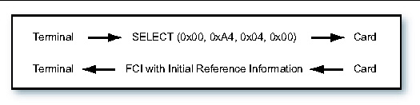
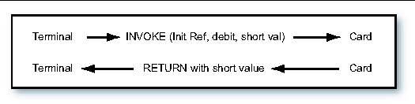

| Application Programming Notes, Java Card Platform, Version 2.2.2 |
| Application Programming Notes, Java Card Platform, Version 2.2.2 |
| C H A P T E R 4 |
|
Developing RMI Applications for the Java Card Platform |
This chapter describes how to write RMI applications for the Java Card platform. In this release, you can run and debug Java Card remote method invocation (Java Card RMI) applications in the C language Java Card RE and the Java Card platform Workstation Development Environment (Java Card WDE).
Following are the main steps for developing an RMI applet for the Java Card platform:
2. Develop classes implementing the remote interfaces
3. Develop the main class for the applet
For a simple applet, the main class of the applet can also be the class implementing the remote interface.
The Java Card RMI Client framework requires stubs only when the remote_ref_with_class format is used for passing remote references. These stubs of remote classes of applets must be pr-generated and available on the client. When the remote_ref_with_interfaces format is used, stubs are not necessary.
In this example, Sun Microsystems' standard RMI Compiler (rmic) is used to generate these stubs.
Following is the command to run the rmic:
rmic -v1.2 -classpath path -d output_dir class_name
path includes the path to the remote class of your sample applet and to the file javacardframework.jar.
output_dir is the directory in which to place the resulting stubs
class_name is the name of the remote class
The -v1.2 flag is required by the RMI client framework for the Java Card platform.
The rmic must be called for each remote class in your applet.
|
Note - You need to generate stubs only for remote classes that list a remote interface in their implements clause. |
The file javacardframework.jar is provided in version 2.2.2 of the Java Card development kit. This JAR file contains compiled implementations of packages javacard.framework, javacard.framework.service, and javacard.security. Classes in these packages might be referenced by Java Card RMI applets and thus might be needed by the rmic to generate stubs.
The server part (the Java Card RMI-enabled applet) can be run on both the C-language Java Card RE and Java Card WDE.
To run the applet on the C-language Java Card RE, the standard procedures apply: the applet must be installed first, using the installer applet. After the applet is installed, the EEPROM state can be saved and used to run the C-language Java Card RE against the Java Card RMI client.
The simplest way to run a Java Card RMI-enabled applet on the Java Card WDE is to add it to the WDE configuration file on the first line. This uses the fact that the Java Card WDE automatically installs the first applet on "power up." The Java Card WDE is a very convenient environment to debug Java Card RMI applets. Of course, all of the standard limitations (such as absence of firewall support) apply.
The client program can be developed and compiled using javac or your favorite IDE. To compile the client, the remote interfaces for your applet must be present in your classpath.
Running the client program has the following requirements.
The basic example is the Java Card platform equivalent of "Hello World," which is a program that manages a counter remotely, and is able to decrement, increment, and return the value of the counter.
As for any Java Card RMI program, the first step is to define the interface to be used as contract between the server (the Java Card technology-based application) and its clients (the terminal applications):
This is a typical Java Card RMI interface in the following ways:
The next step provides an implementation for this interface. This implementation runs on a Java Card platform, and it therefore needs to use only features that are supported by a Java Card platform:
Here, the remote interface is the Purse interface, which declares the remotely accessible methods. By implementing this interface, the class establishes a contract between itself and the compiler, by which the class promises that it will provide method bodies for all the methods declared in the interface:
public class PurseImpl extends CardRemoteObject implements Purse
The class also extends the javacard.framework.service.CardRemoteObject class. This class provides our class with basic support for remote objects, and in particular the ability to export or unexport an object.
The constructor for a remote class provides the same functionality as the constructor of a non-remote class: it initializes the variables of each newly created instance of the class.
In addition, the remote object instance will need to be exported. Exporting a remote object makes it available to accept incoming remote method requests. By extending CardRemoteObject, a class guarantees that its instances are exported automatically upon creation on the card.
If a remote object does not extend CardRemoteObject (directly or indirectly), you must explicitly export the remote object by calling the CardRemoteObject.export method in the constructor of your class (or in any appropriate initialization method). Of course, this class must still implement a remote interface.
The implementation class for a remote object needs to do the following:
The implementation class for a remote object contains the code that implements each of the remote methods specified in the remote interface. For example, here is the implementation of the method that debits the purse:
|
public short debit(short amount) throws RemoteException, UserException if (( amount < 0 )||( balance < amount ) |
An operation is only allowed if the value of its parameter is compatible with the current state of the purse object. In this particular case, the application only checks that the amounts handled are positive and that the balance of the purse always remains positive.
In Java Card RMI, the arguments to and return values from remote methods are restricted. The main reason for this limitation is that the Java Card platform does not support object serialization. Following are the rules for the Java Card platform:
|
Note - The int type is optionally supported on the Java Card platform, so applications that use this type might not run on all platforms. |
On the other hand, object passing in Java Card RMI follows the normal RMI rules:
A class can define methods not specified in a remote interface, but they can only be invoked on-card within the Java Card VM and cannot be invoked remotely.
In version 2.2.2 of the Java Card platform (as in version 2.1), all applications must include a class that inherits from javacard.framework.Applet, which will provide an interface with the outside world. This also applies to applications that are based on remote objects, for two main reasons:
For conversion, an applet should be assigned with an AID known on the client side, 0x00;0x01:0x02:0x03:0x04:0x05:0x06:0x07:0x08, since this AID is used in the client program.
Following is the basic code for such an applet:
The PurseApplet constructor contains the initialization code for the remote object. First, a javacard.framework.service.RMIService object must be allocated. This service is an object that knows how to handle all the incoming APDU commands related to the Java Card RMI protocol. The service must be initialized to allow remote methods on an instance of the PurseImpl class. A new instance of PurseImpl is created, and is specified as the initial reference parameter to the RMIService constructor as shown in the following code snippet. The initial reference is the reference that is made public by an applet to all its clients. It is used as a bootstrap for a client session, and is similar to that registered by a Java RMI server to the Java Card RMI registry.
RemoteService rmi = new RMIService( new PurseImpl() ) ;
Then, a dispatcher is created and initialized. A dispatcher is the glue among several services. In this example, the initialization is quite simple, because there is a single service to initialize:
dispatcher = new Dispatcher((short)1) ;
dispatcher.addService(rmi, Dispatcher.PROCESS_COMMAND) ;
Finally, the applet must register itself to the Java Card RE to be made selectable. This is done in the install method, where the applet constructor is invoked and immediately registered:
(new PurseApplet()).register() ;
The processing of the incoming commands is entirely delegated to the Java Card RMI service, which knows how to handle all the incoming requests. The service also implements a default behavior for the handling of any request that it does not recognize. In Java Card RMI, the following kinds of requests that can be handled:
To perform these actions, the service needs privileged access to some resources that are owned by the Java Card RE (in particular, privileged access is needed to perform the method invocation). The applet delegates processing to the Java Card RMI service from its process method as follows:
The client application runs on a terminal supporting a Java Virtual Machine[1] environment such as Java 2 Platform, Standard Edition (J2SE platform) or Java 2 Platform, Micro Edition (J2ME platform).
platform) or Java 2 Platform, Micro Edition (J2ME platform).
The PurseClient application interacts with the remote stub classes generated by a stub generation tool and the Java Card platform-specific information managed by the Java Card platform client-side framework located in packages com.sun.javacard.clientlib and com.sun.javacard.rmiclientlib.
The following example uses standard Java RMIC compiler-generated client-side stubs. The client application as well as the Java Card client-side framework rely on the APDU I/O library for managing and communicating with the card reader and the card on which the Java Card applet PurseApplet resides. This makes the client application very portable on J2SE platforms.
The following example shows a very simple PurseClient application that is the client application of the Java Card technology-based program PurseApplet:
The client application must open the connection to the card and close it at the end.
The following code shows opening and closing the connection using the RMI client framework:
To access the Java Card applet using remote methods, the client application must obtain an instance of the CardAccessor interface. The ApduIO class implements the CardAccessor interface and is included in the framework.
The CardAccessor interface is a platform-independent and framework-independent interface that is used by the RMI framework for the Java Card platform to communicate with the card. The CardAccessor object is then provided as a parameter during construction of the JavaCardRMIConnect class to initiate an RMI dialogue for the Java Card platform as the following code shows:
// create an RMI connection object for the Java Card platform
JavaCardRMIConnect jcRMI = new JavaCardRMIConnect( myCS ) ;
To invoke methods on the remote objects of the Java Card applet PurseApplet on the card, it must first be selected using the AID:
|
// select the Java Card applet byte[] appAID = new byte[] {0x01,0x02,0x03,0x04,0x05,0x06,0x07, 0x08} ; |
Then, the client must obtain the initial reference remote object for PurseApplet. JavaCardRMIConnect returns an instance of a stub class corresponding to the PurseImpl class on the card which implements the Purse interface. The client application knows beforehand that the PurseApplet's initial remote reference implements the Purse interface and therefore casts it appropriately:
// obtain the initial reference to the Purse interface
Purse myPurse = (Purse) jcRMI.getInitialReference() ;
The client can now invoke remote methods on the initial reference object. The remote methods are declared in the Purse interface. The following code shows the client invoking the debit method. Note how an UserException exception thrown by the remote method is caught by the client code in a normal Java programming language style.
|
short balance = myPurse.debit ( debitAmount ) ; }catch ( UserException jce ) { short reasonCode = jce.getReason() ; |
The client-side scenario uses RMIC generated stubs for the remote classes. RMIC is the Java RMI stub compiler. For the client application PurseClient to execute correctly on the terminal, it needs these remote stub classes and the remote interface class files it uses to be accessible in its classpath.
The stub class PurseImpl_Stub.class for the PurseImpl class is produced by running the standard JDK1.5 RMIC compiler. For example, when in the examples/purse directory, enter the following commands:
rmic -classpath ../..;$JC_HOME/lib/javacardframework.jar -d ../.. -v1.2 examples.purse.PurseImpl
rmic -classpath ../..;%JC_HOME%/lib/javacardframework.jar -d ../.. -v1.2 examples.purse.PurseImpl
This produces a stub class called examples.purse.PurseImpl_Stub.
Thus, for PurseClient to run correctly on the terminal, the following files must be present in the examples/purse directory and accessible via its classpath or from class loaders:
When a Java Card technology-enabled smart card is powered up, the card sends an ATR (Answer to Reset) to the terminal. The Card Accessor returns the value of the ATR to the client program.
When the PurseClient application calls the selectApplet method of JavaCardRMIConnect, it sends a SELECT APDU command to the card via the CardAccessor object. This results in a File Control Information (FCI) APDU response from the RMIService instance of PurseApplet on the card in a TLV (Tag Length Value) format that includes the initial reference remote object information, which FIGURE 4-2 illustrates.

Later, when the PurseClient application calls the debit method of the remote interface Purse, the PurseImpl_Stub object sends an invoke command to the card via the CardAccessor object, identifying the remote object reference, interface, method, and parameter data for method invocation. The RMIService instance of PurseApplet unmarshalls this information and invokes the debit method of the PurseImpl instance, and returns the return value in the response APDU, which FIGURE 4-3 illustrates.

This first example is extremely simple and is not realistic. In particular, it does not include any kind of security. Users are not authenticated and no transport security is provided. Of course, every smart card that implements the Java Card platform includes such security mechanisms, because they are central to Java Card technology.
The following section describes how to add security support to the Purse example.
The Purse interface in the package examples.securepurse is similar to the Purse interface in the previous code sample. In addition, it might include reason codes for exceptions to report security violations to the terminal. Replace it with examples.securepurse. The interface does not include any implementation, which means that, in particular, it does not include any support for security.
The applet keeps its original organization but it also includes additional code that is dedicated to the management of security.
In this example, basic security services (principal identification and authentication, secure communication channel) are provided by an object that implements the SecurityService interface. Because a generic remote object must not be dependent on a particular kind of security service, it must take a reference to this object as a parameter to its constructor. This is exactly what happens here, where the reference to the object is stored in a dedicated private field:
private SecurityService security ;
The SecurityService interface is part of the extended application development framework and offers an API that can then be used to check on the current security status.
In the example, this following required security behaviors for the applet are assumed:
The SecurityService provides methods and constants that allow the implementation to perform such checks. For instance, following is the code for the checks on the debit method:
|
((!security.isCommandSecure(SecurityService.PROPERTY_INPUT_INTEGRITY)) |
If one of the two conditions is not satisfied, the remote object throws an exception. This exception is caught by the dispatcher and forwarded to the client.
The following example shows how to implement a security service.
The supporting applet also must undergo some significant changes, in particular regarding the initialization of the remote object:
The security service that is used by the remote object must be initialized at some point. Here, this is done in the constructor for the SecurePurseApplet:
sec = new MySecurityService() ;
The initialization then goes on with the initialization of the Java Card RMI service. The only new thing here is that the remote object being allocated and set as the initial reference is now a SecurePurseImpl:
RemoteService rmi = new RMIService( new SecurePurseImpl(sec) );
Next, the dispatcher must be initialized. Here, it must dispatch simple Java Card RMI requests and security-related requests (such as EXTERNAL AUTHENTICATE). In fact, the security service handles these requests directly. First, allocate a dispatcher and inform it that it will delegate commands to two different services:
dispatcher = new Dispatcher((short)2);
Then, register services with the dispatcher. The security service is registered as a service that performs preprocessing operations on incoming commands, and the Java Card RMI service is registered as a service that processes the command requested:
dispatcher.addService(rmi, Dispatcher.PROCESS_COMMAND) ;
dispatcher.addService(sec, Dispatcher.PROCESS_INPUT_DATA) ;
The rest of the class (install and process methods) remain unchanged.
The driver client application itself only changes minimally to account for the authentication and integrity needs of SecurePurseApplet. It must also interact with the user for identification. Hence, a subclass of ApduIO_Card_Accessor must be developed to provide these additional interactions and the transport filtering required.
Following is the new SecurePurseClient application:
Note that the CustomCardAccessor instance is now obtained instead of ApduIOCardAccessor:
cca = new CustomCardAccessor(new ApduIOCardAccessor());
An extra step to authenticate with the SecurePurseApplet after selectApplet is added. This invokes a new method in CustomCardAccessor to interact with the card using the user's credentials:
The rest of SecurePurseClient is the same as PurseClient.
The SecurePurseClient application uses a subclass of CardAccessor called CustomCardAccessor to perform user authentication functions and to sign every message sent thereafter for integrity purposes:
The CustomCardAccessor class introduces the authenticateUser method to send APDU commands to the SecurePurseApplet on the card to authenticate the user described by the userKey parameter and other parameters and to compute a transport key. It invokes super.sendCommandAPDU method to send the command without modification.
This CustomCardAccessor class also reimplements the exchangeAPDU method declared in a superclass CardAccessor to sign each message before it is sent out by super.exchangeAPDU.
| Application Programming Notes, Java Card Platform, Version 2.2.2 | 3-11-06 |
Copyright © 2005, Sun Microsystems, Inc. All Rights Reserved.